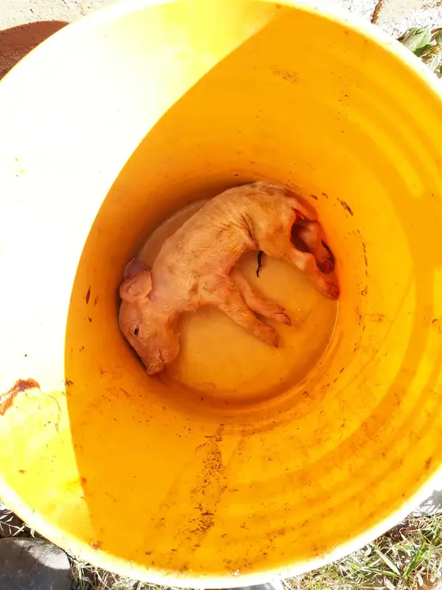
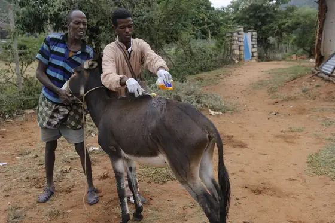

Bienvenue sur
VetoCare
Une plateforme éducative dédiée à la santé animale. Découvrez les animaux, les maladies et les conseils vétérinaires, puis testez vos connaissances avec nos quiz.
Les animaux disponibles sur VetoCare
Que souhaitez-vous découvrir ?
Des ressources claires, gratuites et accessibles sur mobile.
Animaux
116 fiches pour mieux connaître leur alimentation, leur habitat et leurs besoins.
Découvrir les animaux

Conseils
Les bons gestes pour prévenir les maladies et prendre soin de vos animaux.
Trouver un conseilCrédits photos
Animaux : Unsplash. Maladies : Yaraazz / Wikimedia Commons, CC BY-SA 4.0 (redimensionnée). Conseils : US Army Africa / Wikimedia Commons, CC BY 2.0 (redimensionnée). Quiz : Monstera Production / Pexels. Portraits : Teis Aufeldt, CC BY-SA 3.0 ; André Karwath (Aka), CC BY-SA 2.5.
À leurs côtés, chaque jour
Leur bien-être commence par votre attention.
Un regard, un changement d’habitude, un petit geste : apprendre à connaître vos animaux, c’est déjà prendre soin d’eux. VetoCare vous accompagne pour mieux comprendre leurs besoins et leur offrir une vie en bonne santé.
Prendre soin de mes animauxRecherche par symptômes
Quels signes observez-vous chez votre animal ?
Décrivez ce que vous voyez, précisez l’espèce : nous croisons vos observations avec 331 fiches maladies.
- 01Choisissez l’espèce
- 02Décrivez un ou plusieurs signes
- 03Ouvrez la fiche qui correspond
01Espèce
Index des maladies
Maladies par espèce
Chaque fiche indique les symptômes, la prise en charge et les médicaments à discuter avec le vétérinaire.
Parcourir les 331 fichesLes plus élevés en RDC
Fiches animaux
Notre engagement
Mieux comprendre pour mieux soigner
VetoCare vous accompagne avant et après la visite chez le vétérinaire : trois réflexes simples pour protéger la santé de vos animaux.
- 01ObserverRepérer tôt un changement d’appétit, de comportement ou d’aspect.
- 02S’informerConsulter les fiches maladies et les conseils de prévention.
- 03ConsulterFaire examiner l’animal par un vétérinaire dès qu’un doute apparaît.